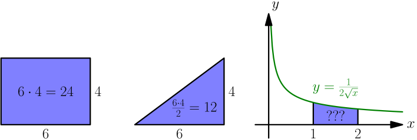

Integrals¶
This chapter assumes that you have a good grasp of derivatives, including the ability to recognize that $\displaystyle\lim_{\Delta x \to0}\textstyle\frac{f(x+\Delta x)-f(x)}{\Delta x}$ is a derivative whenever you see it. I highly recommend reading the derivative tutorial first.
There are many practical ways to use derivatives like the game at the end of the derivative chapter demonstrates. You probably won't find as many practical uses for this chapter as other derivative stuff, but you may find the math itself just amazing.
The Problem¶
Here's a picture of a few areas:

The first two areas are easy to calculate and everything is quite self-explanatory, but how the heck are we going to do the third one?

If this was a question on a codeacademy-like noob programming site you would
probably write some code that approximates the area by calculating areas of
little rectangles. This Python program prints 0.42167045099417744:
import math
def f(x):
return 1/(2 * math.sqrt(x))
slice_width = 0.1
result = 0
x = 1
while x < 2:
result += slice_width * f(x)
x += slice_width
print(result)
The answer is not too bad and we could make it much better by adjusting
slice_width, but I calculated the same area on paper by hand in about
10 seconds and I got a precise answer instead of a decimal approximation.
This chapter is all about how I did that and why it works.
Area to x¶

Let's say that our curve is of the form $y=f(x)$ where $f$ is a continuous function. Then we'll choose some $x$ location and move it right by $\Delta x$. Then we could calculate the change of area $\Delta A$ in a couple different ways:
- $A(x)$ is the area to the beginning of the slice and $A(x + \Delta x)$ is the area to the end of the slice, so $\Delta A = A(x+\Delta x)-A(x)$.
- The $\Delta A$ area looks kind of like an $f(x)$ by $\Delta x$ rectangle, so $\Delta A \approx f(x) \Delta x$. This ignores the area of the red triangle in the image, so it is not precise.
We get this:
$$\begin{align}A(x+\Delta x)-A(x) &\approx f(x)\Delta x \\ \frac{A(x+\Delta x)-A(x)}{\Delta x} &\approx f(x)\end{align}$$The thinner the slice is, the smaller the red triangle-ish area is compared to the entire slice area. So, if we make the slice infinitely thin, we don't need to care about the red area:
$$\begin{align}\lim_{\Delta x \to 0} \frac{A(x+\Delta x)-A(x)}{\Delta x} &= f(x) \\ A'(x) &= f(x)\end{align}$$Yes, this is correct! The derivative of the area function is $f$. This is precise, so we can get rid of $\approx$ and replace it with $=$. So, if we want to calculate areas all we really need is an antiderivative.
I used $A$ here to denote the antiderivative because $A$ is a letter that often describes an area, but a more common style is to say that the antiderivative of $f$ is $F$. We'll use this big $F$ style in the rest of the tutorial.

Our First Integral¶
Let's go back to our original problem. One of the derivative rules on the summary page was this:
$$\begin{align}\frac{d}{dx} \sqrt x = \frac{1}{2 \sqrt x}\end{align}$$So it looks like the antiderivative function $F$ is $F(x) = \sqrt x$. But how about $F(x) = \sqrt x + 1$? Its derivative is also $\frac{1}{2 \sqrt x}$ because $\frac{d}{dx} 1 = 0$. Or how about $\sqrt x + 100$ or $\sqrt x - 10$? We don't know what $F(x)$ is, but we know that $F(x) = \sqrt x + C$ where $C$ is a constant.

Let's try to calculate our area:
$$\begin{align}F(b)-F(a) &= (\sqrt b + C) - (\sqrt a + C) \\ &= \sqrt b + C - \sqrt a - C \\ &= \sqrt b - \sqrt a \\ &= \sqrt 2 - \sqrt 1 \\ &= \sqrt 2 - 1 \\ &= 0.414213562373...\end{align}$$That's all there is to it! $\sqrt 2 - 1$ is the precise area. I think this is awesome.
This took quite a while because we went through all the steps needed to understand everything, but now that you have seen this once you can do it much faster. So, here are the steps for calculating the area under $y=f(x)$ between $x=a$ and $x=b$:
- Find an antiderivative $F(x)$. There are infinitely many antiderivatives, but any antiderivative will do because the $C$'s are substracted away.
- Calculate $F(b)-F(a)$ and you're done.
This connection between antiderivatives and areas is also known as the fundamental theorem of calculus.

Notation¶
Usually this stuff is written like this:
- The blue area in the image at right is $\int_a^b f(x)\ dx$. Be careful here – the $dx$ is just a part of the notation and you must not forget it.
- The antiderivative of $f(x)$ including the $+C$ is the same thing without $a$ and $b$. So $\int f(x)\ dx = F(x) + C$ where $F'(x) = f(x)$.
- $[F(x)]_a^b = F(b)-F(a)$.
The integral sign $\int$ is a strecthed S like Sum, and $\int_a^b f(x) dx$ means conceptually a sum of the areas of little $f(x)$ by $dx$ rectangles.
For example, with this notation, our $\frac{1}{2 \sqrt x}$ thing can be calculated with very little paper like this:
$$\begin{align}\int_1^2 \frac{1}{2 \sqrt x}\ dx = \left[\sqrt x\ \right]_1^2 = \sqrt 2 - \sqrt 1 = \sqrt 2 - 1\end{align}$$This is how I did it in just a few seconds. Note that you can leave out the $+C$ when calculating areas, but you should include it when calculating antiderivatives.
Integral Rules¶
You can turn derivative rules into integral rules by applying $\int(...)dx$ on both sides. Keep in mind that $\int f'(x)\ dx = f(x) + C$ and $\frac{d}{dx} \left( \int f(x)\ dx \right) = f(x)$ because $\int(...)dx$ means antiderivative. For example:
$$\begin{align}f'(g(x))g'(x) &= \frac{d}{dx}(f(g(x))) \\ \int f'(g(x))g'(x)\ dx &= f(g(x)) + C\end{align}$$As with derivatives, there's a handy list of integral rules on the summary page.
In our first example I chose $\frac{1}{2 \sqrt x}$ just because we know it's the derivative of $\sqrt x$, but with the summary page we can also integrate stuff like $\frac{1}{\sqrt x}$:
$$\begin{align}\int \frac{1}{\sqrt x}\ dx = \int 2 \frac{1}{2 \sqrt x}\ dx = 2 \int \frac{1}{2 \sqrt x}\ dx = 2 \sqrt x + C\end{align}$$$$\begin{align}\frac{d}{dx}(2 \sqrt x + C) = 2 \frac{1}{2 \sqrt x} + 0 = \frac{1}{\sqrt x}\end{align}$$We can also do $\sqrt x$ but we need to know that $\frac{1}{3/2} = \frac{2}{3}$. This is easy to check like this:
$$\begin{align}\frac{1}{\ \frac 3 2 \ } = \frac{1 \cdot 2}{\frac 3 2 \cdot 2} = \frac 2 3\end{align}$$Let's do this.
$$\begin{align}\int \sqrt x\ dx &= \int x^{1/2}\ dx \\ &= \frac{x^{1/2+1}}{\frac 1 2 + 1} + C \\ &= \frac 1 {\frac 1 2 + \frac 2 2} {x^{1/2} \cdot x} + C \\ &= \frac 1 {\ \frac 3 2\ } x\sqrt x + C \\ &= \frac 2 3 x\sqrt x + C\end{align}$$$$\begin{align}\frac{d}{dx} \left( \frac 2 3 x \sqrt x + C \right) &= \frac 2 3 \cdot \frac{d}{dx}(x \sqrt x) + 0 \\ &= \frac 2 3 \cdot \frac{d}{dx}(x^{1/2+1}) \\ &= \frac 2 3 \cdot \left(\frac 1 2 + 1\right) x^{1/2} \\ &= \frac 2 3 \cdot \frac 3 2 \cdot \sqrt x \\ &= \sqrt x\end{align}$$Integrating with Python¶
Of course, sympy does integrals really nicely. It doesn't add $+C$ for some reason, so you need to remember it yourself. The $+C$ is not just some useless gibberish that you need to remember just because it's annoying, and sometimes forgetting it would screw things up (see the jump example below).
>>> from sympy import *
>>> init_printing()
>>> x = Symbol('x')
>>> integrate(1/(2*sqrt(x)), x)
√x
>>> integrate(1/(2*sqrt(x)), (x, 1, 2)) # area between x=1 and x=2
-1 + √2
>>> integrate(sqrt(x), x)
3/2
2⋅x
──────
3
Sometimes the answers look different than the answers we ended up with, but they are still correct:
$$\begin{align}\frac{2x^{3/2}}{3} = \frac{2 \cdot x \cdot x^{1/2}}{3} = \frac 2 3 x \sqrt x\end{align}$$Example: Smooth Jumps Revisited¶
We learned to make a game where a ball jumps in the shape of parabola in this derivative example. We somehow guessed that the natural jumping curve might be a parabola. But now we know how to get from $g$ being a constant to a parabola. I won't explain things much; I'll just assume that you have read the derivative thing linked above.
Here $v(t)$ and $h(t)$ mean velocity and height at time $t$. I'm doing that instead of plain $v$ and $h$ to remind us about the fact that they aren't just constants; they depend on the time. However, $g$ is just a constant.
Now if we rename the constants so that $a = \frac 1 2 g$, $b = C_1$ and $c = C_2$ we get $h(t) = at^2+bt+c$, and that's the equation of a parabola.
Example: Circle Area¶
This section assumes that you know what $\pi$ and $\tau$ are. Click here if you don't.
Let's try to figure out how to calculate the area of a circle if we know the radius. There are a few different ways to divide a circle into a bunch of smaller and simpler areas:

The idea here is that we can calculate the area of a circle by just integrating a bunch of these little area slices. The first one is the most difficult to integrate, but the second and third one are something we can do. Let's do the third one.

The green area in the image at right looks kind of like a triangle with base $\Delta b$ and height $r$, but we know its area is $A(b+\Delta b)-A(b)$:
$$\begin{align}A(b+\Delta b)-A(b) &\approx \frac{\Delta b \cdot r}{2} \\ \frac{A(b+\Delta b)-A(b)}{\Delta b} &\approx \frac r 2 \\ \lim_{\Delta b\to0} \frac{A(b+\Delta b)-A(b)}{\Delta b} &= \frac r 2 \\ A'(b) &= \frac r 2 \\ A(b) &= \int \frac r 2\ db = \frac{rb}{2} + C\end{align}$$If $b=0$, then $A(b)=0$.
$$\begin{align}A(0) = \frac{r \cdot 0}{2} + C &= 0 \\ C &= 0\end{align}$$If $b$ is the whole perimeter $\tau r$, then $A(b)$ is the circle area.
$$\begin{align}A(\tau r) = \frac{r \tau r}{2}+0 = \frac 1 2 \tau r^2 = \pi r^2\end{align}$$Alternatively, after figuring out $A(b) = \frac{rb}{2}+C$ we could also do this:
$$\begin{align}A(\tau r)-A(0) &= \left(\frac{r\cdot\tau r}{2}+C\right)-\left(\frac{r\cdot0}{2}+C\right) \\ &= \frac 1 2 \tau r^2 +C-0-C \\ &= \frac 1 2 \tau r^2 = \pi r^2\end{align}$$In general, if you see something like $\frac 1 2 r^2$ it's possibly the result of some integration because $\frac{d}{dr} \left( \frac 1 2 r^2 \right) = r$. The $\pi r^2$ form kind of hides the integration because $\pi = \frac 1 2 \tau$, but rewriting it with $\tau$ makes everything clear. On the other hand, $\pi r^2$ is slightly easier to use because the $\frac 1 2$ is hidden. That's why this tutorial uses $\pi$ when it comes to circle areas.
Going 3D¶
Problem
If the VLC Media Player cone is 200 pixels high, its radius is 50 pixels and it's 3-dimensional, how many pixels fit inside the cone?

The image comes from this wikimedia page.
{kind=link}
Integrals are actually not limited to areas, and they also work nicely with 3D stuff. Here $V(x)$ represents the volume to $x$.


We get this stuff that looks a lot like our area stuff above:
$$\begin{align}V(x+\Delta x)-V(x) &\approx A(x) \cdot \Delta x \\ \frac{V(x+\Delta x)-V(x)}{\Delta x} &\approx A(x) \\ \lim_{\Delta x \to 0} \frac{V(x+\Delta x)-V(x)}{\Delta x} &= A(x) \\ V'(x) &= A(x)\end{align}$$$$\begin{align}V(b)-V(a) = \bigl[V(x)\bigr]_a^b = \int_a^b V'(x)\ dx = \int_a^b A(x)\ dx\end{align}$$Let's solve our VLC problem. If you look at the image at right, all we really need is $A(x)$, but for that we need to know what $f(x)$ is. Let's start by drawing $y=f(x)$ in a 2D plane without the 3D stuff:

If you have read the slope thing on my derivative page you have no trouble at all finding $f(x)$.
$$\begin{align}f(x) = sx = \frac{\Delta y}{\Delta x} x = \frac r h x\end{align}$$Next we need $A(x)$. Above we figured that the area of a circle is $\pi r^2$ where $r$ is the radius, but the green circle's radius is $f(x)$ instead of $r$ so $A(x) = \pi (f(x))^2$. Let's do this:
$$\begin{align}\int_0^h A(x)\ dx &= \int_0^h \pi (f(x))^2\ dx \\ &= \int_0^h \pi \left( \frac r h x \right)^2\ dx \\ &= \int_0^h \pi \frac{r^2}{h^2} x^2\ dx \\ &= \pi \frac{r^2}{h^2} \int_0^h x^2\ dx \\ &= \pi \frac{r^2}{h^2} \left[ \frac{x^3}{3} \right]_0^h \\ &= \pi \frac{r^2}{h^2} \left( \frac{h^3}{3} - \frac{0^3}{3} \right) \\ &= \frac{\pi r^2 h}{3}\end{align}$$
That was a mess, but we're almost done!
Note that the area of the base circle is $\pi r^2$, and $\pi r^2 h$ would be the volume of a cylinder that barely fits around the VLC cone. So, in the image at right, the cylinder's volume is exactly three times the cone's volume regardless of their sizes. I think this is quite nice.
So, now we can just plug in $r=50$ and $h=200$ to get our cone volume.
$$\begin{align}\frac{\pi r^2 h}{3} = \frac{\pi \cdot 50^2 \cdot 200}{3} \approx 523600\end{align}$$That's quite a few pixels.